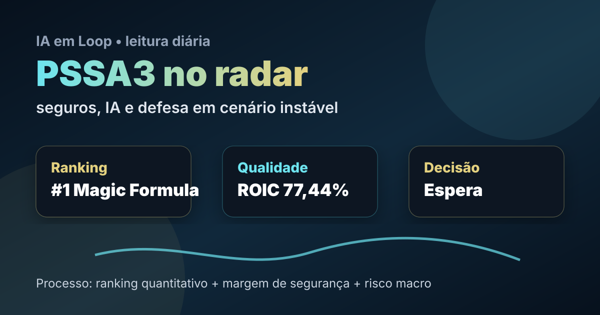

13/05: petróleo, IA e PSSA3 em uma carteira de defesa
A leitura de hoje junta petróleo sensível ao Irã, juros ainda exigentes, regulação de IA no Brasil e uma ação menos barulhenta do que Petrobras ou mineração: PSSA3. Em um mundo em que tecnologia, energia e geopolítica viraram o mesmo tabuleiro, seguros entram como estudo de qualidade, recorrência e margem de segurança.

Leitura visual: PSSA3 aparece como candidata de qualidade no ranking, mas a decisão depende de preço, juros, sinistralidade e disciplina de capital.
O sinal do dia
O mercado acordou com duas mensagens simultâneas. A primeira é conhecida: petróleo, Irã, rotas energéticas e reunião Trump-Xi seguem mexendo com inflação esperada, juros e apetite por risco. A segunda é estrutural: IA saiu da fase de encantamento e entrou na fase de governança, custo, regulação e produtividade real. No Brasil, o uso de IA na saúde, a discussão regulatória por níveis de risco e a criação de cursos específicos mostram que o tema já deixou de ser só narrativa de big tech.
Para o investidor pessoa física, isso pede menos caça a manchete e mais arquitetura de carteira. Energia, defesa, cibersegurança, infraestrutura crítica, commodities e empresas de caixa forte tendem a ganhar relevância em cenário de crise mundial, guerras e incerteza. Mas há um ponto importante: resiliência não significa comprar qualquer ativo “defensivo” a qualquer preço.
Leitura IA em Loop: quando petróleo, IA e geopolítica disputam o preço dos ativos, o ranking quantitativo vira filtro de sanidade. Ele não prevê o futuro; ele ajuda a separar qualidade, preço e risco antes da emoção assumir o volante.
Por que PSSA3 hoje?
PSSA3 foi escolhida para alternar o estudo diário e sair do eixo mais óbvio de petróleo e mineração. No filtro quantitativo da Magic Formula acompanhado pelo IA em Loop, PSSA3 aparece entre os nomes de maior destaque, com ROIC elevado e earnings yield excepcional no dado analisado. Esses números são fortes o bastante para colocar a empresa no radar, mas também exigem checagem: earnings yield muito alto pode refletir lucro extraordinário, base contábil específica ou distorção de captura de dados.
Na apuração pública do dia, o Google News RSS trouxe resultado recente da Porto Seguro: lucro líquido de R$ 958 milhões no 1T26, alta anual de 15%, segundo manchete do InfoMoney. Para contexto de preço, consulta ao Yahoo Finance para PSSA3.SA retornou R$ 50,06 como preço regular de mercado e fechamento anterior de R$ 49,18. Esses dados ajudam a situar o estudo, mas não substituem leitura do release completo, balanço e histórico de dividendos.
| Item | Leitura verificada | Implicação |
|---|---|---|
| Ranking | Destaque na Magic Formula | Passa muito bem no filtro inicial de qualidade/preço |
| ROIC | Elevado no filtro quantitativo | Indício de retorno sobre capital excepcional, sujeito a validação contábil |
| Earnings yield | Excepcional no dado analisado | Sinal de aparente desconto, mas com risco de dado extraordinário/distorcido |
| Preço/contexto | R$ 50,06 no Yahoo Finance consultado hoje | Referência pontual, não preço-alvo |
| Resultado recente | Lucro de R$ 958 mi no 1T26 em manchete do InfoMoney | Operação segue lucrativa, mas precisa leitura completa por linha de negócio |
Tese, pontos positivos e riscos
Tese
Porto Seguro combina marca forte, seguros, serviços financeiros e receitas recorrentes. Em crise, proteção patrimonial continua relevante; em normalização, crédito, serviços e eficiência operacional podem ampliar retorno.
Pontos positivos
Primeira colocação no ranking, ROIC elevado, lucro recente em alta, negócio menos dependente de commodity e possível uso de IA para precificação de risco, atendimento, fraude e sinistros.
Riscos
Sinistralidade, competição, inadimplência em serviços financeiros, queda de margem, juros afetando valuation e risco de o ranking estar capturando lucro não recorrente.
Contexto macro
Petróleo e geopolítica pressionam inflação; juros altos favorecem caixa e renda financeira, mas comprimem múltiplos. Seguradoras podem ser resilientes, não imunes.
Compra, venda ou espera?
Pelos critérios do IA em Loop, PSSA3 hoje parece mais próxima de espera. A qualidade quantitativa é excelente e o lucro recente reforça a tese, mas o número de earnings yield está alto demais para ser tratado como verdade final sem auditoria manual. Em processo sério, isso não é gatilho automático de compra; é convite para estudar melhor antes de aumentar risco.
- Gatilho de compra: confirmar que lucro e ROIC são recorrentes, dividendos sustentáveis, valuation ainda descontado após ajuste de itens não recorrentes e sinistralidade controlada.
- Gatilho de espera: preço perto de máxima recente, falta de leitura completa do balanço, dúvida sobre qualidade do lucro ou mercado ainda punindo ações por juros e aversão a risco.
- Gatilho de venda/redução: piora persistente de sinistralidade, queda de ROIC, crédito deteriorando, payout insustentável ou tese dependendo só da posição no ranking.
O que isso muda na carteira
Em cenário de crise mundial, guerras e disputa tecnológica, ativos ligados a energia, defesa, cibersegurança, infraestrutura, commodities críticas, seguradoras, saneamento, telecom e empresas com caixa forte podem se mostrar mais resilientes. A diferença é que cada setor protege de um tipo de risco. Petróleo protege parcialmente contra choque energético, mas carrega risco político. Mineração depende de China. Seguros dependem de precificação, sinistros e disciplina atuarial.
A pessoa física não precisa acertar o próximo manchete do Irã nem a próxima rodada de IA generativa. Precisa evitar concentração burra. Um processo razoável combina renda fixa protegendo liquidez, ações de qualidade compradas com margem de segurança, exposição seletiva a tecnologia/infraestrutura e empresas capazes de sobreviver a juros altos sem destruir capital.
No repertório monitorado de mercado, a mensagem recorrente continua sendo disciplina: não comprar narrativa sem preço, não vender qualidade por susto e não transformar ranking em recomendação automática. Hoje não houve fala específica de influenciador com link verificável suficiente para atribuição direta; por isso, o conteúdo foi usado apenas como leitura ampla de consenso e cautela.
Checklist antes de agir
- Ler o release completo do 1T26 da Porto Seguro e separar lucro recorrente de efeito pontual.
- Comparar PSSA3 com outras seguradoras e bancos para entender se o valuation está realmente descontado.
- Checar dividend yield, payout, ROE/ROIC ajustado e evolução de sinistralidade.
- Não usar o preço de R$ 50,06 como preço-alvo; ele é apenas fotografia da consulta.
- Exigir margem de segurança maior se juros, inflação e petróleo voltarem a pressionar múltiplos.